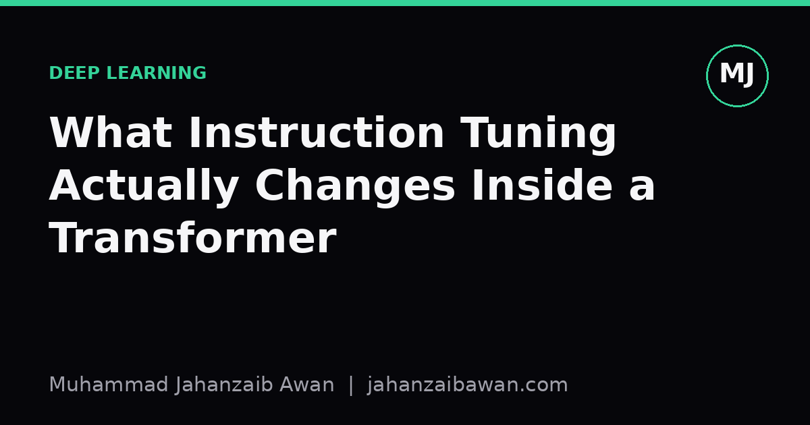

What Instruction Tuning Actually Changes Inside a Transformer
A layer-by-layer look at what shifts, and what barely moves, when a pretrained model is fine-tuned to follow instructions.

Why this question matters
When people talk about instruction tuning, they usually describe it in behavioural terms: the model stops rambling, starts answering the actual question, and follows formatting requests. That description is true but it skips the part I find more interesting, which is what is physically happening inside the network's weights and activations to produce that change. If you are deciding how much data to use, which layers to freeze, or whether a lightweight adapter will suffice, the answer depends heavily on where in the network the useful change actually lives.
The common assumption, especially among people new to fine-tuning, is that instruction tuning teaches the model new knowledge or new reasoning ability. In most cases that is not what is happening. The base model, having been pretrained on a huge amount of text, already contains the raw capability to answer questions, summarise, and follow a pattern, because all of those behaviours exist somewhere in its training data in some form. Instruction tuning is largely about selecting and amplifying behaviours that are already latent, rather than installing new ones. That reframing is the key to understanding why the changes are concentrated where they are.
A layer-by-layer picture
Start at the bottom of the stack, the early layers close to the embedding. These layers tend to do fairly generic work: tokenisation artefacts, local syntax, part-of-speech-like structure, and short-range dependencies. Across instruction tuning, these early layers typically shift the least. The embeddings for ordinary words barely move, and the attention patterns that track local grammar remain largely intact. This makes sense if you think of these layers as a shared toolkit, equally useful whether the model is completing a news article or answering a direct question.
Move into the middle layers and the picture changes. This is where a lot of the action happens. Middle layers in a transformer tend to encode more abstract, task-relevant structure, things like whether the input looks like a question, a command, or a statement, and what kind of continuation is expected. During instruction tuning, probes trained on these middle-layer activations often become noticeably better at predicting features like task type or whether the model is in Hmm, let me give a concrete worked version of this. Imagine a model fine-tuned on instruction data where prompts are phrased as direct requests such as 'summarise the following text in two sentences.' Before tuning, a middle-layer representation of that prompt might sit close to representations of ordinary declarative text about similar content. After tuning, that same representation tends to cluster much more tightly with other instruction-style prompts, regardless of their topic. The model has learned to represent 'this is an instruction, respond accordingly' as a distinct, reusable direction in its activation space, separate from the topic itself.
The late layers, closest to the output, show the most visible shift, but it is narrower in character than people expect. Rather than wholesale rewriting, what changes most is the final mapping from internal representation to output token probabilities, effectively recalibrating which tokens get boosted given a particular internal state. A plain language model, given a half-finished question, might assign reasonable probability to continuing with more question text, because that pattern appeared constantly in its pretraining data. An instruction-tuned model, given the same internal state, redirects probability mass toward starting an answer. The underlying understanding of the content has not necessarily deepened; the decision of what to do with that understanding has changed.
What this implies about attention heads and parameter movement
If you look at attention head behaviour specifically, a consistent finding across multiple analyses of fine-tuned models is that only a small subset of heads shift meaningfully, and they tend to cluster in the middle-to-late layers rather than being spread evenly. Heads that previously attended broadly across a passage sometimes narrow their focus toward the most recent instruction-like span of text, effectively learning to prioritise 'what was I just asked to do' over general context. This is a small, surgical change in attention pattern, not a redesign of the attention mechanism.
This also explains, in a very practical sense, why parameter-efficient fine-tuning methods such as low-rank adapters work as well as they do. If the useful change during instruction tuning really were distributed evenly and deeply across every weight matrix in every layer, a low-rank update injected into a handful of layers would be a poor approximation of what is needed. The fact that it often performs close to full fine-tuning is itself evidence that the actual shift is lower-dimensional and concentrated, consistent with the layer-by-layer story above: light touch early, moderate reorganisation in the middle, and sharper recalibration late.
There is a caution worth stating plainly. Observing that middle and late layers change the most does not mean early layers are irrelevant, and it does not mean you can safely freeze everything except the last few layers and expect identical results to full fine-tuning. Small changes to early representations can still matter, particularly for instruction formats that are unusual relative to pretraining data, such as structured outputs or multi-turn formatting. The generalisation holds on average across typical instruction-tuning datasets, not as a guarantee for every dataset and every model architecture.
The practical takeaway
If you are designing an instruction-tuning run, this layer-by-layer picture should change how you think about a few decisions. First, do not expect instruction tuning to teach new factual knowledge reliably; it is far better understood as reshaping which existing capabilities get surfaced and how, so if your use case genuinely needs new knowledge, that is a retrieval or continued-pretraining problem, not an instruction-tuning problem. Second, when debugging a model that is not following instructions well, look at middle-layer representations and late-layer output calibration before assuming the model lacks the underlying skill; often the skill is there and the routing is off.
Finally, treat the concentration of change in the middle and late layers as a reason to evaluate carefully rather than a reason to cut corners. A small, surgical shift is easy to overfit to superficial patterns in your instruction data, such as particular phrasings or formatting cues, without the model genuinely improving at the underlying task. Leakage-aware evaluation, with held-out instruction styles and topics that were not seen during tuning, matters more here than it would if the change were genuinely deep and general. Knowing where the change lives is only useful if your evaluation is honest enough to tell you whether that change actually generalises.